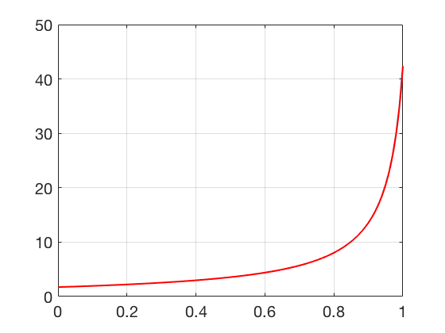

Then \(w_1\) and \(z_1\) can be written \begin{eqnarray*} w_1 &=& w_0+\frac{h}{2}(s_1+s_2) \\ &=& w_0[1+\frac{h}{2}(\lambda+\lambda+h\lambda^2)]\\ &=& w_0\left[1+h\lambda +\frac{h^2\lambda^2}{2}\right]\\ z_1 &=& w_0+\frac{h}{6}(s_1+4s_3+s_2) \\ &=& w_0+\frac{h}{6}\left[\lambda w_0+\lambda w_0(1+\lambda h)+4\lambda w_0\left(1+\frac{\lambda h}{2}+\frac{\lambda^2 h^2}{4}\right)\right]\\ &=& w_0+\frac{\lambda h}{6} w_0 \left[1+1+\lambda h+4+4\frac{\lambda h}{2}+4\frac{\lambda^2 h^2}{4}\right]\\ &=& w_0\left[1+\lambda h+\frac{\lambda^2 h^2}{2}+\frac{\lambda^3 h^3}{6}\right]. \end{eqnarray*} Therefore \[ |y_1-w_1| = \left|w_0e^{\lambda h} -w_0\left[1+\lambda h+\frac{\lambda^2 h^2}{2}\right]\right| = |w_0| O(h^3) \] and \[ |y_1-z_1| = \left|w_0e^{\lambda h} -w_0\left[1+\lambda h+\frac{\lambda^2 h^2}{2}+\frac{\lambda^3 h^3}{6}\right]\right| = |w_0| O(h^4) \]
The following Python NEEDS FIXING XXXX commands call the ode23 and ode45 solvers:
opts=odeset('RelTol',1e-8);
[t23,y23]=ode23(@(t,y) (1+y^2)/2,[0 1],sqrt(3),opts);
[t45,y45]=ode45(@(t,y) (1+y^2)/2,[0 1],sqrt(3),opts);
The exact solution at \(t=1\) is \(y(1) = 42.367213.\) ode23 uses 419 steps and has error \(0.000292\) at \(t=1\), and ode45 uses 137 steps and has error \(0.000051.\) The approximate solutions are indistinguishable from the exact solution at the scale shown below.
